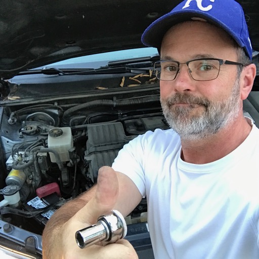

About Me

Patrick is an experienced senior-level research director in drug discovery with strong interests in entrepreneurship and the development and of new technologies/products for both business and consumer use. He was the Founder and C.E.O. of the now failed HD Sciences, a company dedicated to helping medicinal chemists take greater synthetic risks through the microscale chemicalsynthesis. He has also been a Senior Research Director at Exelixis in San Francisco, where his team identified 3 clinical development candidates abd built a 4.5 million compound screening library that was the basis for over 25 clinical development candidates. Adrift in Kansas City, Patrick is trying to "fit in" and is currently looking for new opportunities in the fields of biotechnology, pharmaceutical research, medical devices, animal health, and agricultural technology. For fun, and to prepare for his next entrepreneurial endeavor, he is currently struggling through a "Learn to Code" boot camp at the University of Kansas. He is also an avid gardener, chef, cyclist, yoga student, and beekeeper. Peace out, y'all.